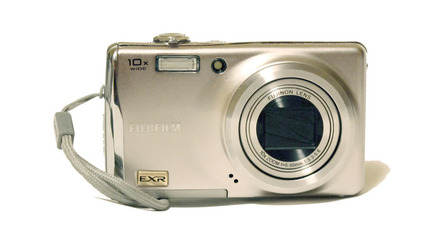

Welcome to Fotoaparatai
Fotoaparatai foto, optika - Skelbiu.lt
2020.10.29 06:22X Dėl geresnės Skelbiu.lt paslaugų kokybės naudojame slapukus (angl. cookies).
Naršydami toliau, patvirtinate, kad sutinkate su slapukais. Tai bet kada galėsite atšaukti, pakeisdami nustatymus. Skelbiu.lt slapukų politika . Lankomiausias
skelbimų portalas LT RU ( 0 ) Įsiminti skelbimai ( 0 ) Peržiūrėti skelbimai Paieškos ( 0 ) Prisijungti Registruotis Fotoaparatai, Foto, optika (2054) Gauti naujus skelbimus: Ekrane El. paštu + Įdėti skelbimą Įsiminti skelbimai (0) Skelbimų: 2054 Atnaujinti viršuje Naujausi viršuje Atnaujinti viršuje Pigiausi viršuje Brangiausi viršuje
NEPRALEISKITE NAUJŲ SKELBIMŲ
Fotoaparatai, Foto, optika
Gaukite naujus skelbimus į ekraną Gaukite naujusskelbimus el. paštu Vilnius prieš 1 d. 1
Sisteminis fotoaparatas Panasonic (lumix)g80m
Parduodu sisteminį fotoaparatą panasonic lumix g 80 m su objektyvu g vario 12-60 f3,5-5,6 asph su garantija. nupirktas kovo mėnesi, yra dvi baterijos, kroviklis, atminies kortelė 64gb lexsar professional. fotoaparatas nauduotas keleta kartu.... Būklė: naudota 790 € Vilnius prieš 1 d. 1Canon 700d + du objektyvai
Parduodame labai tausotą Canon 700d su dviem objektyvais su apsauginiais stiklais. Objektyvai: efs 55-250mm f/4-5.6 IS II ir ef 50mm f/1.8 II. Viskas tvarkinga ir veikia, sukomplektuota su pirkimo dėželėmis, knygelėmis ir tt. Parduodame, nes... Būklė: naudota 350 € Šiauliai prieš 1 d. 1Nikon D200. Tik 3921 kadrų!
Parduodu tik 3921 kadrų prabėgusį Nikon D200! (4% užrakto resurso!) Fotoaparatas kaip naujas. Su juo parduodamas nuostabus portretinis objektyvas Nikkor AF 50mm F1.8D. Būklė tiek fotoaparato, tiek objektyvo - puiki. Pradedantiems nepatariu ir... Būklė: naudota 200 € Vilnius prieš 1 d. 1Nikon D610 + 2 objektyvai
Parduodu Nikon D610 puikios buklės objektyvas Tamron 24-70mm F/2.8 objektyvas NIKKOR micro 60mm objektyvas SIGMA macro 70-200-PARDUOTAS! Velbon PHD-42QD štatyvas Būklė: naudota 950 € Klaipėda prieš 1 d. 1Canon EOS 600d
Parduodu prižiūrėta veidrodinį fotoaparatą kartu su krepšiu ir nuotoliniu pulteliu - 250 €. Taip pat parduodu Metz blykstę 44 AF - 1 digital- 100 € Būklė: naudota 250 € Šilalės r. prieš 1 d. 1Parduodu naujus fotoaparatus!
Nauji! Fotoaparatai galima rinktis iš trejų spalvų kaina vieneto 1€. Yra jų daug! Perkant 50 vienetų ir daugiau. Siuntimas nemokamai Būklė: nauja 1 € Vilnius, ... prieš 2 d. 1Fotoaparatų supirkimas ir remontas
Vilniuje, Kaune, Klaipėdoje, Šiauliuose po vieną ir urmu superkame naujus ir naudotus veidrodinius fotoaparatus (DSLR), objektyvus, blykstes ir kitus priedus. Gali būti nauji ir naudoti. Perkami tik veikiantys, be defektų. Perkame ne tik iš... Būklė: naudota Ieško Vilnius, ... spalio 25 d. 1Parduodu puikų Nikon Coolpix B700
Parduodu super zoom COOLPIX B700 fotokamerą, labai gero stovio, viskas puikiai vekia, buvo pirktas vaikui, nedaug naudojosi, poto nusibodo. Puikiai fotografuoja, nuostabiai filmuoja, lengvas, patogus, labai kokybiškas daiktas. Optine sistema... Būklė: naudota 250 € Vilnius, ... prieš 1 d. 1Parduodu labai gerai veikianti Nikon D7100
Parduodu naudotą, bet labai gerai veikenti Nikon D7100, funkcionalumas 10/10, komplekte body, objektyvas TAMRON XR Di II AF 18-200 f/3,5-6,3 (IF) MACRO ф62 A14, hama filtras UV 390, blenda, pakrov ėjas, vifi adapteris, krepšys, štatyvas, 16 Gb... Būklė: naudota 410 € Vilnius spalio 25 d. 1Naujas Sony Dsc-rx100 III fotoaparatas
Gautas dovanų, buvo naudotas vos kelis kartus. Įeina viskas, kas buvo originalioje dėžutėje: – Fotoaparatas Sony DSC-RX100 III, juodas – Krovimo/duomenų perkėlimo laidas – Instrukcija ir kita popierinė medžiaga – Dėžutė Papildomai... Būklė: nauja 360 € Reklama Vilnius prieš 9 val. 1Sony A7 III (Alpha)
Kaip naujas, nesurasite JOKIŲ naudojimo požymių. Pilna parduotuvinė komplektacija. Padaryta kadrų 5500 Būklė: naudota 1 449 € Kaunas spalio 24 d. 1Panasonic Lumix Fz1000
Paprastas fotoaparatas, kuris visai neblogai filmuoja. Nusipirkus tai nustebino mane nes manau tai ganėtinai nebrangus fotoaparatas galintis fiksuoti 4K rėžimu. Minusas kad nesikeičia objektyvas. Parduodu nes tiesiog guli nenaudojamas.... Būklė: naudota 195 € Vilnius prieš 1 min.Minolta dynax 300 si
Minolta dynax 300 si korpusas. Objektyvo nera. Bukle gera. Atsakau sma. Skambinti po 17 val. Būklė: naudota 7 € Kaunas prieš 6 min.Parduodami nebrangiai du senoviski fotoaparatai
Parduodami nebrangiai du,senoviski,tarybiniu laiku,juostiniai fotoaparatai, Smena Symbol ir Smena 8M. Puikios bukles,gerai islaikyti,su odiniais,deklais,nesubraizyti,nekrite,neskile. Perkant abu,dezute nauju,nenaudotu foto juosteliu dovanu.... Būklė: naudota 10 € Kaunas, ... prieš 23 min.Sankyo macro focus super mf 303
Parduodamas tvarkingas kaina sutartine mezinau kiek gali kainuot siulykit savo kaina Būklė: naudota Kaunas prieš 29 min.Panasonic Lumix Dmc-fz8,juodas,stovis geras,priedu
Panasonic Lumix DMC-FZ8,juodas,stovis geras,prieduose dvi baterijos,orginalus pakrovejas. kaina 65 eurai siunciu i kita miesta Parametrai Vaizdo taškai 7.1 mpix, 3072 x 2304 Jutiklio dydis 7 mm. Vaizdo santykis 4:3, 3:2, 16:9 Jautrumas 100... Būklė: naudota 65 € Kėdainių r. prieš 34 min.Zenit Em su priedais
ZENIT EM dirba tvarkingai ir įvairūs priedai kaina: 120 EUR yra galimybė siųsti LPaštu Lietuvos teritorijoje su prekės atsiėmimu TIK LPašte (kaina gali skirtis Nidos, Juodkrantės gyventojams) išsamesnė informacija CALL / SMS Kėdainiai ... Būklė: naudota 120 € Kėdainių r. prieš 34 min.Zenit Em
Parduodu ZENIT EM naudotas jau legendinis sovietinis foto aparatas kokių 40 metų :) patikrintas, mechanizmas veikia, uzuolaidėlės tvarkoje galima naudoti ir fotografuoti naudotas vieno šeimininko optika tvarkoje, nesubražyta pakeistas... Būklė: naudota 65 € Kėdainių r. prieš 34 min.Canon ixus 860 is
Puikiai išlaikytas mažai naudotas tvarkingas 9/10 DOVANA: dėklas ir 32Gb atminties kortelė TOSHIBA galima 8MPix daryti virš 60 kadrų FOTOgrafijų yra dėžutė, dokumentai, el. pakrovėjas, CD ir AUDIO + VIDEO jungtis prie pvz TV akumuliatorius... Būklė: naudota 45 € Vilnius prieš 44 min.Puikus Nikon 3200 su 18-105mm obj. fotoaparatas
Nikon D3200 + AF-S DX Nikkor 18-105 mm f/3.5-5.6G ED VR su dėžutėmis, pakrovėju, 2 akumuliatoriai, objektyvo maišeliu, 2vnt po 8GB atminties kortelės, USB kabelis, pieštukas valyti objektyvui. Padarytų kadrų skaičius tik 9473. Atskirai parduodu... Būklė: naudota 260 € Vilnius prieš 51 min.Antikvarinis fotoaparatas
Senovinis fotoaparatas. Veikiantis. Komplekte yra kasetės negatyvų fotoplokštelėms ir originalus medinis štatyvas. Gali būti puikus tiek klasikinio, tiek ir modernaus interjero akcentas. Būklė: naudota 150 € Vilnius prieš 59 min.Naujas Canon EOS 1300d 18-55 Dc III veidrodinis.
Naujas veidrodinis CANON EOS 1300D fotoaparatas, su CANON objektyvu EFS 18-55 mm. 1:3-5-5,6 IS III. Geras fotoaparatas pradedančiajam kaip pirmas veidrodinis DSLR. Labai patogus, paprastas naudoti ir mokytis fotografijos meno. Pridedama: -... Būklė: nauja 265 € Vilnius prieš 59 min.Canon EOS 1000d su Ef-s 18-55 mm. 1:3,5-5,6 Isii.
Veidrodinis CANON EOS 1000D fotoaparatas, su objektyvu Canon EF-S 18-55 mm. 1:3,5-5,6 ISII (su stabilizatoriumi). Fotografuoja puikiai. Fotoaparato būklė labai gera, naudojimosi požymių praktiškai nėra. Neturi jokių defektų, visi mazgai, ... Būklė: naudota 120 € Vilnius prieš 59 min.Skaitmeninis fotoaparatas Sony Cyber-shot Dsc-h7.
Fotoaparato būklė labai gera, naudojimosi požymių praktiškai nėra. Neturi jokių defektų, visi mazgai, „stiklas“ ir priedai be priekaištų. Pilnas komplektas. Pridedamas originalus pakrovėjas nuo tinklo. Baterija saugota ir vis dar laiko gerai. ... 90 € E. parduotuvės prekė Fujifilm Instax Mini 9 Flamingo Pink (Rožinis) senukai.lt, 1a.lt, efix.lv nuo 59.04 € E. parduotuvės prekė Fujifilm instax Mini 11 Blush Pink (Rožinis) rde.lt, Fotofabrikas.lt, urmokaina.lt nuo 66.7 € Daugiau prekių Kainos.lt » 1 2 3 4 5 6 Įsiminti skelbimai Įdėkite skelbimąPopuliarios paieškos:
sony a7
nikon z6
canon
leica
zenit
mamiya
nikon
panasonic
pentax
sony
olympus
ricoh
iskra
fuji
fujifilm
Prisijunk ir rask savo įsimintus skelbimus visur – kompiuteryje, telefone, planšetėje ARBA Jungtis su Facebook Jungtis su Google Skelbiu.lt pagalba: +370 664 55727 Darbo laikas: I-V 08:20 - 17:00 Naudojimo taisyklės / D.U.K. Kontaktai Svetainės struktūra D I G I N E T